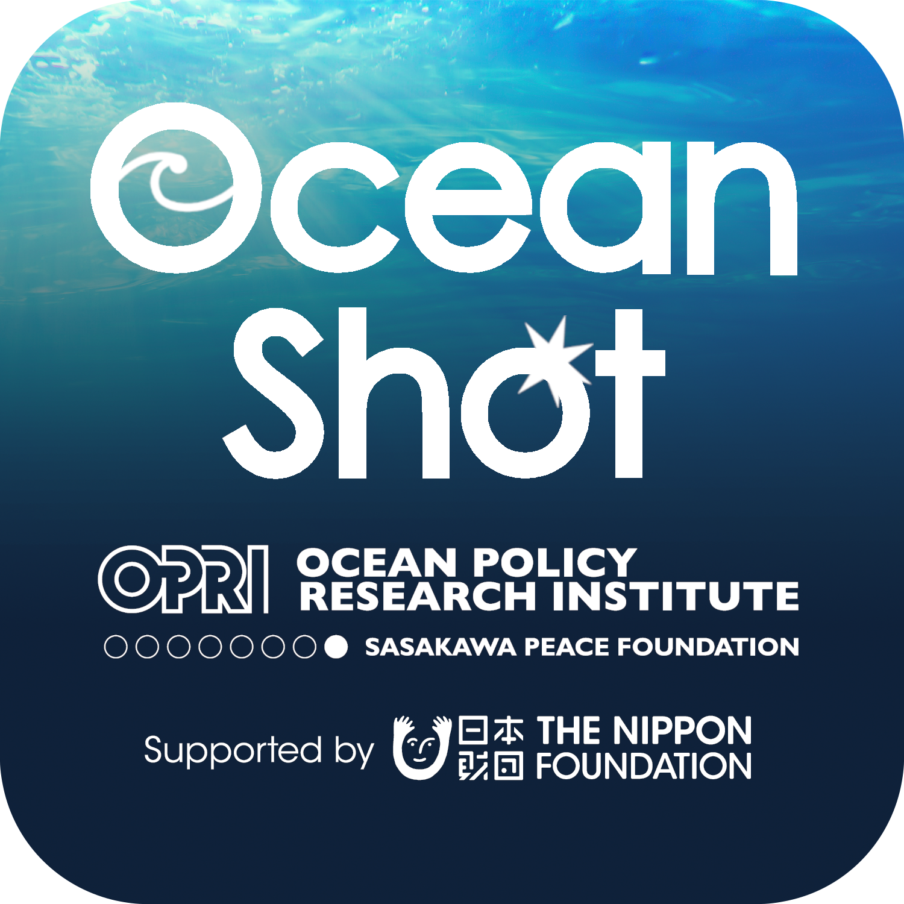
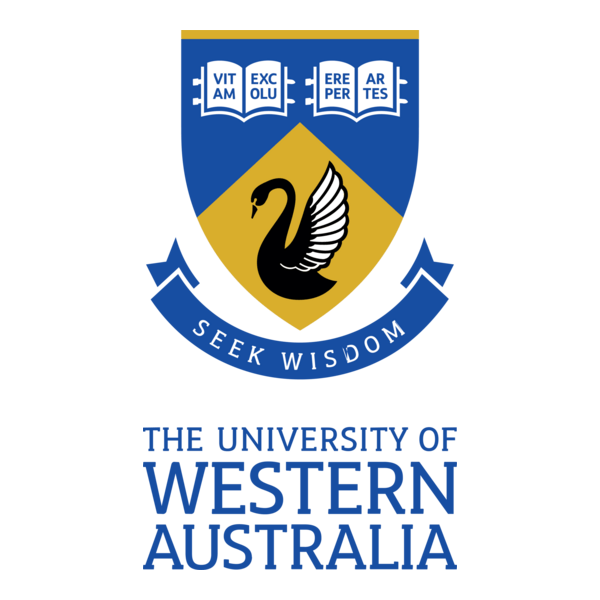
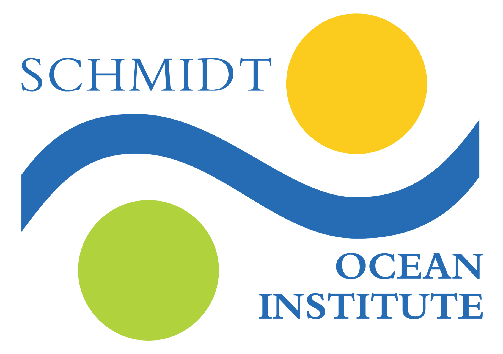

MidSEC Conference 2026
Bäckaskog Castle, Sweden
SATURDAY, 13 JUNE – FRIDAY, 19 JUNE
The 2026 MidSEC Conference is the inaugural in-person meeting of the community.
MidSEC was founded in 2025 at the University of Western Australia with funding generously provided by the Sasakawa Peace Foundation’s Ocean Shot Research Grant Program. Our objective is to bring together the midwater research and engineering community in order to increase collaboration, data sharing, impact of everyone’s work on our understanding of the largest habitat on earth and on policy, conservation and public education of the midwater.
To that end, we created a listserv that is officially launching at this meeting.
You can subscribe to the email list at:
https://maillists.uwa.edu.au/mailman/listinfo/midsec-announcements.
We hope this list offers a way to connect to other experts, post open opportunities, find collaborators and information, and keep the community connected. Please post your papers that you believe the community would be interested in and announcements of programs, opportunities, etc that may be of interest to the community. Please invite anyone you think would benefit from joining the conversation to join the community.
MidSEC’s inaugural conference is conceived as a small, in-person conference designed to bring together researchers, engineers, policy makers, data managers, science communicators and conservationists working on the midwater. Our objective is to foster discussion, collaboration and strategic planning to advance midwater work and conservation. Presentations, tech showcases, and discussion sessions provide ample starting points for conversations, while the all-inclusive venue, Bäckaskog Castle, naturally provides ample opportunities to talk with your colleagues outside sessions and to enjoy the natural beauty of the surrounding area together.
We hope you come with an open mind, your wealth of experience, a desire to always learn more, and curiosity – particularly about the midwater.
Advisory Panel
Kelly Benoit-Bird, Monterey Bay Aquarium Research Institute
John Burns, Bigelow Laboratory for Ocean Sciences
Sonke Johnsen, Duke University
Heather Judkins, University of South Florida St. Petersburg
Sponsored by
 |
 |
 |